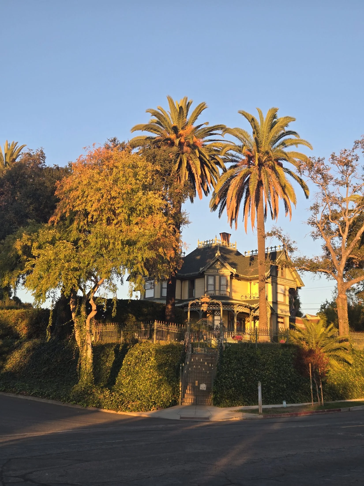
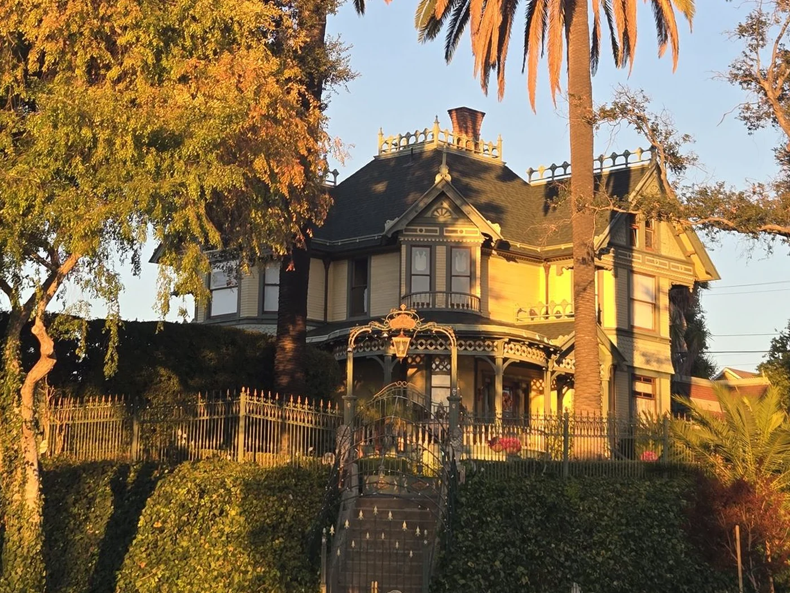
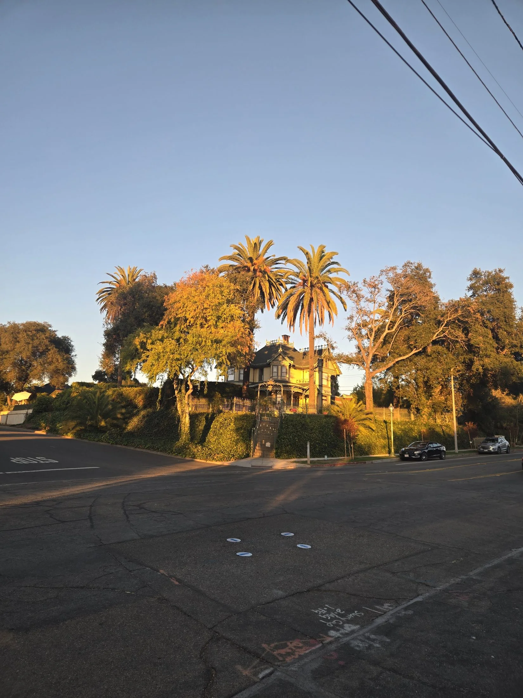
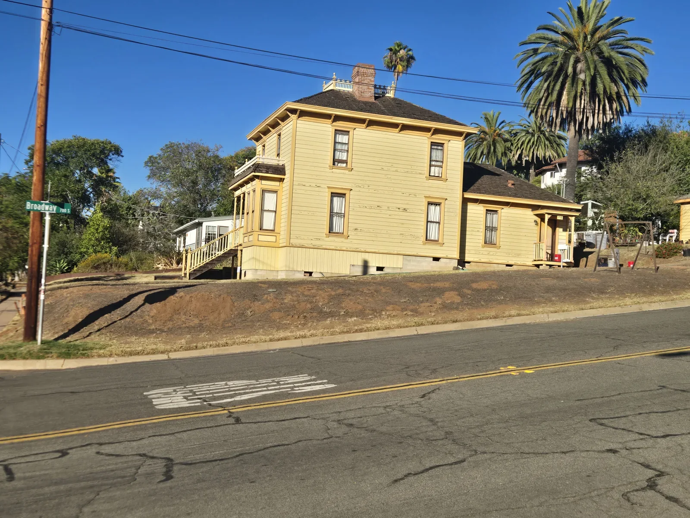
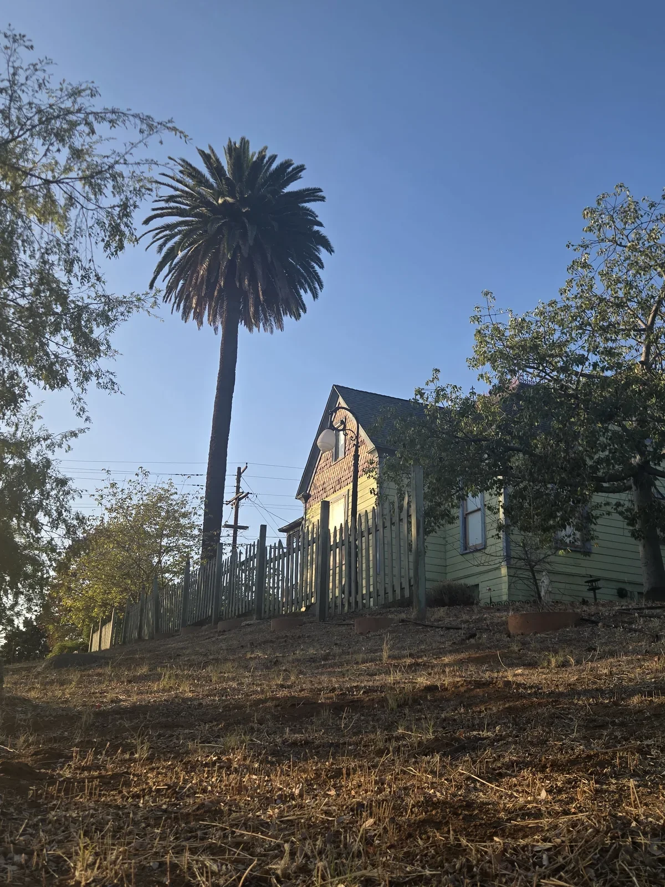
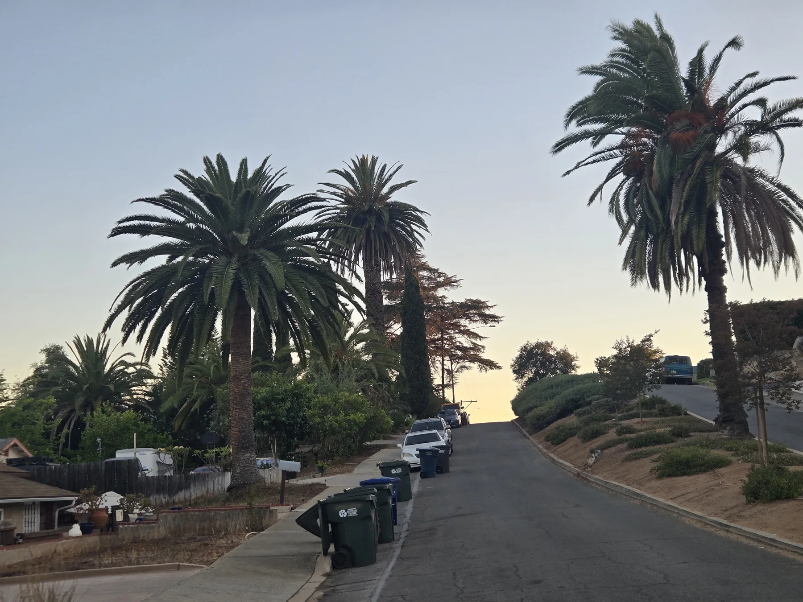

At the Albert H. Beach House, the palms do something a photograph of the house alone cannot do. They lift the roofline into the sky, mark the entrance from a distance, and give a grand 1896 house the vertical scale its architecture seems to ask for.

I have photographed this corner before. For this feature I went back to the records, because the house gives us a firm date that the palms do not. The National Register nomination identifies the building as the most ornate Queen Anne house in Escondido, built in 1896. It says Albert H. Beach bought the lot from the Escondido Land and Town Company in 1887 and that he and his wife, Annie, were in their new house by February 1896. The City also lists the Beach House among Escondido’s historic resources, and the Old Escondido Historic District itself was established in 1989.
That was a formative period for the neighborhood. Escondido had incorporated only eight years earlier, in 1888. The Beach property was part of the Stanley Heights Addition, one of the subdivisions extending the new town south of its commercial center. A large, highly decorated house on a raised corner lot made a clear statement about the confidence of the young city.


Why these palms belong in the architectural view
Canary Island date palms became familiar in Southern California as bold ornamental trees for estates, civic grounds, and boulevards. Their appeal is easy to read here. A single trunk creates a strong vertical line without hiding an entire facade. A broad crown can balance a steep roof, a tower, or a formal entrance. A pair can turn a walk or driveway into an arrival.
The Huntington’s history of its Palm Garden gives a useful California comparison. One Canary Island date palm was moved to San Marino from Collis Huntington’s San Francisco property after the 1906 earthquake and fire, and it survives. The garden describes the species as capable of reaching about sixty feet with a crown roughly fifty feet across. That combination of height and breadth is why a mature specimen can hold its own beside a substantial house.

A few blocks can show several versions of the same relationship. At South Broadway, the large palm gives a comparatively plain two-story house a second, rounded silhouette. Elsewhere on the walk, a tall trunk beside a gabled house is almost as important as the roof itself. These are different properties and different palms, and I do not assume that any palm was planted when its house was built.

A photographic walk
The palm changes the way the house arrives
It may frame the entrance, repeat the symmetry of a facade, or stand just off-center and keep the composition from feeling static. In each case, the palm is part of the property’s appearance—not background decoration that can be swapped out without changing the view.
How old might the Beach House palms be?
The honest answer is a range, not a birthday. The house is 130 years old in 2026. The palms are visibly mature, with tall, substantial trunks and broad crowns, but I found no planting record or dated historic photograph that proves when they went into the ground. Trunk height alone cannot settle the question; growth changes with water, soil, climate, transplanting, and maintenance.
Based on their visible scale, the long ornamental use of the species in Southern California, and their deliberate placement around a prominent 1896 property, I would use a cautious working range of roughly 70 to 120 years for the two large Beach House palms. That means they may date to an early phase of the property’s landscape, perhaps from the early to mid-twentieth century. It does not establish that they are original to 1896. A dated family photograph, nursery invoice, landscape plan, or clear appearance on an early aerial image could narrow the range.
Beach House palms; photographic and property-context estimate only.
Canary Island date palm at the Gottfried Maulhardt Farm in Ventura County.
The Huntington specimen moved from San Francisco after the 1906 earthquake and fire.
What the well-documented old palms tell us
The strongest comparison I found is not a tourism claim. California’s State Historical Resources Commission described a circa-1876 Canary Island date palm as a contributing feature of the Gottfried Maulhardt Farm in Ventura County. Its National Register documentation explains the evidence and still uses appropriately cautious language about the planting date. That palm is close to 150 years old if the estimate is correct.
Historic groups matter too. California’s historic-resource reporting treats the mature Canary Island date palms of Ford Place in Pasadena as part of the character of an early planned residential neighborhood developed mainly between 1903 and 1916. That is the useful scale for Old Escondido: not a claim that one local palm is a record holder, but evidence that these palms can survive for well over a century and can become part of the historic significance of a residential place.

What would be missing
If the large palms disappeared from the Beach House corner, the architecture would still be important. But the approach would be lower, the entrance less strongly marked, and the roofline more isolated against the sky. At the smaller houses, the loss would be different but just as visible: less shade, less height, and less of the contrast between a finely scaled old building and a massive living form.
That is why I like to photograph the whole relationship before I make a close condition record. For a mature palm at a historic property, an assessment should consider the crown and trunk, the placement near structures and streets, visible change over time, and what the palm contributes to the property. Protection begins with understanding what is actually there. Where age matters, the next useful step is not a confident guess; it is finding dated evidence.
Sources and limits
- National Register of Historic Places registration, A. H. Beach House — construction date, Queen Anne significance, lot history, and early ownership.
- City of Escondido: Old Escondido Historic District and Historic Preservation — district and local preservation context.
- City of Escondido cultural-resources appendix — local historic-resource addresses, including the South Broadway property shown.
- The Huntington Palm Garden — pre-1906 survivor and mature size context.
- California State Parks: Gottfried Maulhardt Farm and its National Register documentation — circa-1876 palm comparison and the limits of age estimation.
- California State Historical Resources Commission annual report — Ford Place palms as historic residential landscape features.
I did not find a readable, public-use plaque photograph tied to these views, so I used the National Register record for the 1896 date rather than enlarging an unclear marker. All contemporary photographs in this feature are SDPP repository photographs. Property inclusion does not imply that the owners are SDPP clients.
For the shorter visual field note that led to this story, see Old Escondido’s Living Landmarks. For the earlier property view, see Albert H. Beach House: Historic Architecture Framed by Mature Canary Island Date Palms. Homeowners considering the condition or protection of a mature palm can also review residential palm assessment.